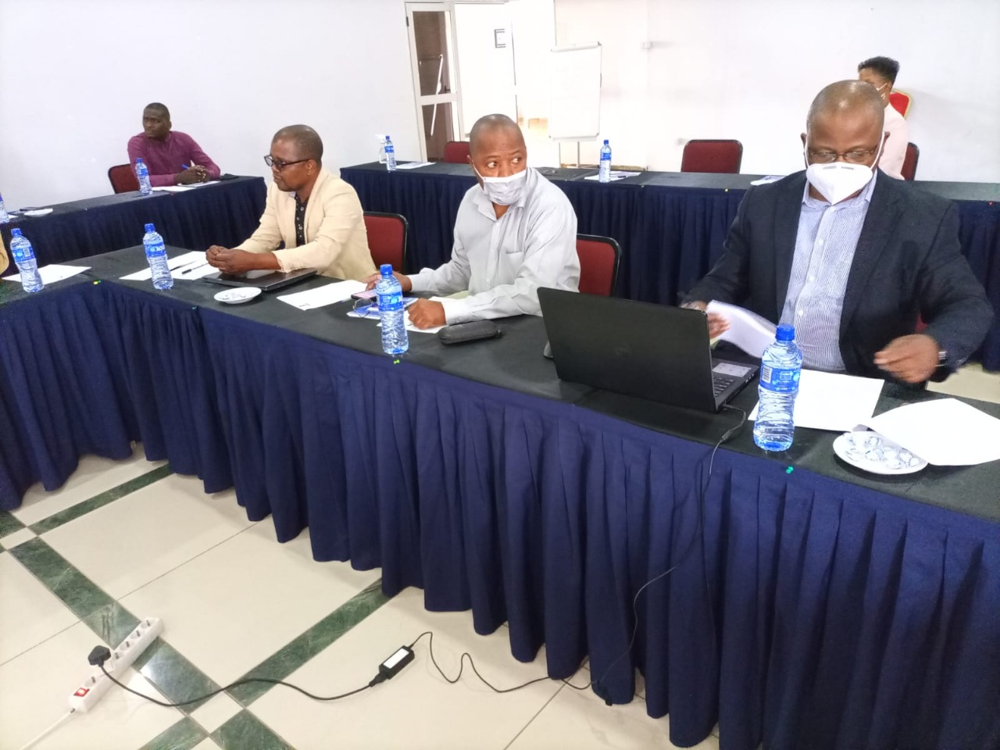
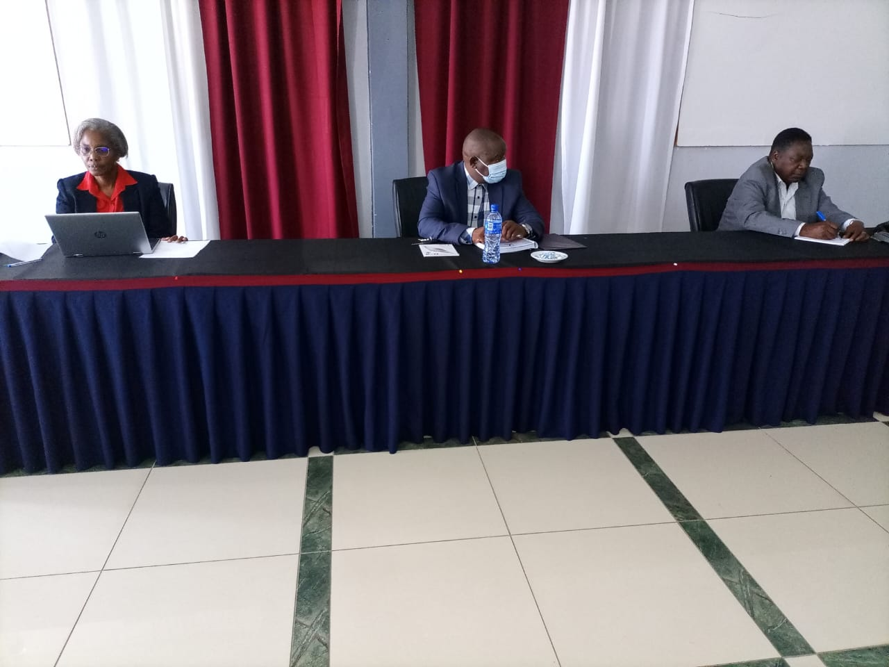
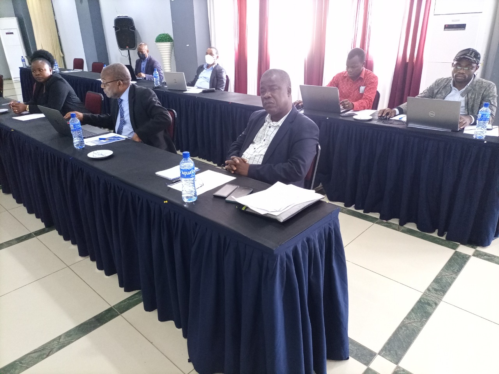

Workshop sobre Reforma e Desenvolvimento Curricular da FCT (15 e 16 de Set)
Decorreu, nos dias 15 e 16 de Setembro, na Universidade Joaquim Chissano, um Workshop cujo foco de discussão era a Reforma de desenvolvimento curricular da Faculdade de Ciências e Tecnologia.


